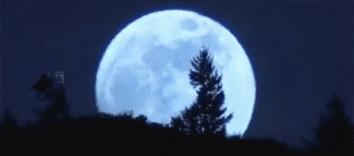

Desde la perspectiva de un terrícola, el espacio exterior es una zona que se encuentra a unos 100
kilómetros sobre nuestro planeta, donde no hay aire apreciable para respirar o dispersar la luz. En esta zona,
el azul da paso al negro porque las moléculas de oxígeno no son lo suficientemente abundantes para hacer que
el cielo sea de color azul.
Además, el espacio es un gran vacío, lo que significa que el sonido no puede transmitirse porque las moléculas
no están lo suficientemente juntas para que puedan transmitirlo. Sin embargo, eso no quiere decir que el
espacio esté vacío. El gas, el polvo y otras partículas de materia flotan alrededor de las áreas "más vacías"
del universo, mientras que las regiones más pobladas pueden albergar planetas, estrellas y galaxias.
Nadie sabe exactamente cómo de grande es el espacio. La dificultad surge debido a lo que podemos ver en
nuestros detectores. Medimos largas distancias en el espacio en "años luz", que representan la distancia que
le lleva a la luz para viajar en un año (aproximadamente 9,3 billones de kilómetros).
Desde la luz que es visible en nuestros telescopios, hemos trazado las galaxias que casi llegan al Big
Bang, que se cree que inició nuestro universo hace 13.700 millones de años. Esto significa que podemos "ver"
en el espacio a una distancia de casi 13.700 millones de años luz. Sin embargo, los astrónomos no están
seguros de si nuestro universo es el único que existe, lo que expone que el espacio podría ser mucho más
grande de lo que nos parece.
Para comprender la inmensidad del cosmos, el libro de Mariano Abril Domingo (geodesta militar, ingeniero de
caminos y doctor en construcción) titulado “225 preguntas sobre la naturaleza del universo” (Editorial
Marcombo) es un fantástico punto donde hacer una parada y repostar para leer sobre todo lo que nos rodea,
desde los átomos a las galaxias. Este libro de divulgación científica pretende acercarse al gran público; ante
todo curioso, pero no experto mediante explicaciones sobre la naturaleza del universo con todas aquellas
cuestiones que “siempre quiso saber, pero nunca se atrevió a plantear”.
Las cuatro fuerzas conocidas del universo son: la interacción nuclear fuerte (la más intensa pero con un alcance
muy corto), la interacción electromagnética (unas cien veces menos intensa que la anterior y con un alcance limitado),
la interacción nuclear débil (10 billones de veces menos intensa que la interacción fuerte y con un alcance 1.000
veces menor) y la interacción gravitatoria (tiene un alcance ilimitado pero es 10 elevado a 38 menos intensa que la
interacción fuerte), resume Mariano Abril.
!
El sol es una estrell
es decir, un cuerpo celeste que brilla con luz propia, compuesto de hidrógeno y helio a enormes temperaturas
en estado de plasma.
Es la estrella más cercana a la Tierra y de la que depende toda la vida en ella. Concentrada en el sol
encontramos el 99,85% de toda la masa del Sistema Solar.
El sol es una estrella enorme con un diámetro de 1,4 millones de kilómetros y podría llegar a albergar a
109 planetas en su superficie

La Luna tiene un tamaño cuatro veces más pequeño que la Tierra. Tiene una densidad de 40% menor a la de la
Tierra.
Tiene una superficie rocosa y llena de cráteres por los impactos de cuerpos de gran tamaño que lograron
atravesar su
delgada atmósfera. Ayuda a estabilizar la oscilación que realiza la Tierra y el clima.

El planeta Tierra es el tercero que orbita alrededor del sol. Es un planeta terrestre metálico, clasificado
en esta categoría junto con Mercurio, Venus y Marte debido a la composición de sus núcleos.
La característica más importante de la Tierra es que es el único planeta en el sistema solar con agua
líquida en su superficie. Este fue un factor clave para el desarrollo de la vida en este planeta.
Actualmente, es el único planeta del sistema solar con unas condiciones favorables para la vida.

| Contenidos |
El sol |
La luna |
La tierra |
| Edad |
4.603 miles
de millones de años |
4.53 miles
de millones de años |
4.543 miles
de millones de años |
|
Radio
|
696.340 km |
1.7374.4 km |
6.371 km |
| Distancia |
distancia de la tierra
149.6 millones de km |
distancia de la tierra
384.400 km |
distancia desde el sol
149.6 millones de km |
| Gravedad |
274 m/s² |
1.62 m/s² |
9.807 m/s² |